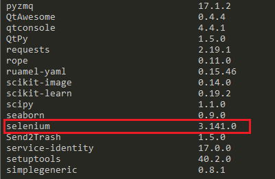
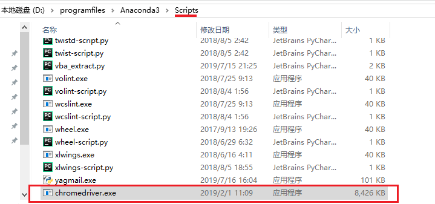
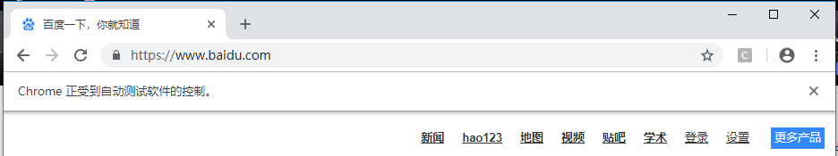

selenium是的作用是模拟点击浏览器上的按钮，配合一个无头浏览器就可以快速解决一些前端需要加解密的功能。
selenium安装的第一步就是用pip把模块下载回来。
pip install selenium具体报错信息如下：
File "/usr/local/lib/python2.7/dist-packages/selenium-3.0.0b2-py2.7.egg/selenium/webdriver/firefox/webdriver.py", line 65, in __init__
self.service.start()
File "/usr/local/lib/python2.7/dist-packages/selenium-3.0.0b2-py2.7.egg/selenium/webdriver/common/service.py", line 71, in start
os.path.basename(self.path), self.start_error_message)
selenium.common.exceptions.WebDriverException: Message: 'geckodriver' executable needs to be in PATH.
Exception AttributeError: "'Service' object has no attribute 'process'" in <bound method Service.__del__ of <selenium.webdriver.firefox.service.Service object at 0x7f753ad53390>> ignored
# 发现报错信息包含： Message: 'geckodriver' executable needs to be in PATH报错原因 ：
是因为缺少依赖包geckodriver，所以在安装selenium之前，先把geckodriver安装上就能解决了。
不同平台下有不同解决方案：
Windows系统
下载geckodriver.exe：
下载地址：https://github.com/mozilla/geckodriver/releases
请根据系统版本选择下载；（如Windows 64位系统）
下载解压后将getckodriver.exe复制到Firefox的安装目录下，如（C:\Program Files\Mozilla Firefox），并在环境变量Path中添加路径：C:\Program Files\Mozilla Firefox；
重启cmd后，再次运行代码即可
ubuntu系统
Mac OS系统：
如果你已经安装好了brew,那么输入如下两条命令即可
brew install geckodriver
brew link geckodriverMac OS检验geckodriver是否安装成功,
# shell窗口下输入命令
geckodriver
# 什么都不输出，也不退出，说明安装成功
# 注意：windows 系统需要重启一个新cmd窗口在输命令
最后使用pip list查看一下已安装的库：

发现已经包含selenium,说明安装成功。
from selenium import webdriver
browser = webdriver.Chrome()
browser.get('http://www.baidu.com/')报错：
Traceback (most recent call last):
File "D:\programfiles\Anaconda3\lib\site-packages\selenium\webdriver\common\service.py", line 76, in start
stdin=PIPE)
File "D:\programfiles\Anaconda3\lib\subprocess.py", line 756, in __init__
restore_signals, start_new_session)
File "D:\programfiles\Anaconda3\lib\subprocess.py", line 1155, in _execute_child
startupinfo)
FileNotFoundError: [WinError 2] 系统找不到指定的文件。
During handling of the above exception, another exception occurred:
Traceback (most recent call last):
File "D:/code/commany/python/APPScan/main.py", line 7, in <module>
browser = webdriver.Chrome()
File "D:\programfiles\Anaconda3\lib\site-packages\selenium\webdriver\chrome\webdriver.py", line 73, in __init__
self.service.start()
File "D:\programfiles\Anaconda3\lib\site-packages\selenium\webdriver\common\service.py", line 83, in start
os.path.basename(self.path), self.start_error_message)
selenium.common.exceptions.WebDriverException: Message: 'chromedriver' executable needs to be in PATH. Please see https://sites.google.com/a/chromium.org/chromedriver/home
Process finished with exit code 1没有安装chromedriver导致的，参考自己chrome浏览版本对应的chromedriver版本：
https://my.oschina.net/u/3367404/blog/3011400
chromedriver下载地址：
https://chromedriver.storage.googleapis.com/index.html
下载完成后，将ChromeDriver的可执行文件配置到环境变量下。
如果使用Windows，建议直接将chromedriver.exe文件拖到Python的Scripts目录下。

再次运行脚本，发现会新弹出一个新chrome。
